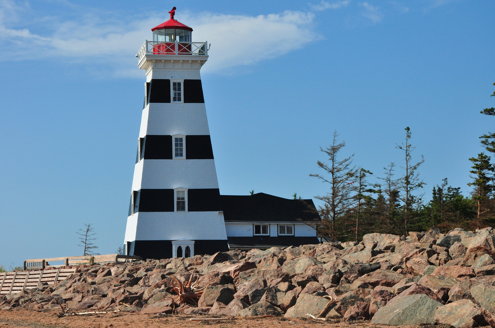

Attractions

Confederation Bridge
The Confederation Bridge (French: Pont de la Confédération) is a box girder bridge carrying the Trans-Canada Highway across the Abegweit Passage of the Northumberland Strait, linking the province of Prince Edward Island with the mainland province of New Brunswick. Opened May 31, 1997, the 12.9-kilometre (8.0 mi) bridge is Canada's longest bridge and the world's longest bridge over ice-covered water.

West Point
West Point is a cape and an unincorporated community located in the southwestern corner of Prince Edward Island, Canada. West Point Lighthouse, a square tapered tower, was built in 1875 by the federal Department of Marine. The West Point Lighthouse Inn, Museum and Restaurant was established in 1984. The West Point Development Corporation, a non-profit organization, maintains the lighthouse as a navigational aid beacon, although the living quarters of the lighthouse are now used as a unique country inn and museum.
Green Gables Heritage Place
Green Gables Heritage Place is a 19th century farm and literary landmark in Cavendish, Prince Edward Island, Canada. Green Gables served as the setting for the Anne of Green Gables novels by Lucy Maud Montgomery. Green Gables is recognized as a Federal Historic Building by the government of Canada and is situated on the L.M. Montgomery's Cavendish National Historic Site of Canada. The National Historic Site itself is situated on Prince Edward Island National Park.

PEI National Park
Prince Edward Island National Park is a National Park of Canada located in the province of Prince Edward Island. Situated along the island's north shore, fronting the Gulf of St. Lawrence, the park measures approximately 60 km (37 mi) in length and ranges from several hundred metres to several kilometres in width. Established in 1937, the park's mandate includes the protection of many broad sand beaches, sand dunes and both freshwater wetlands and saltmarshes. The park's protected beaches provide nesting habitat for the endangered piping plover; the park has been designated a Canadian Important Bird Area.